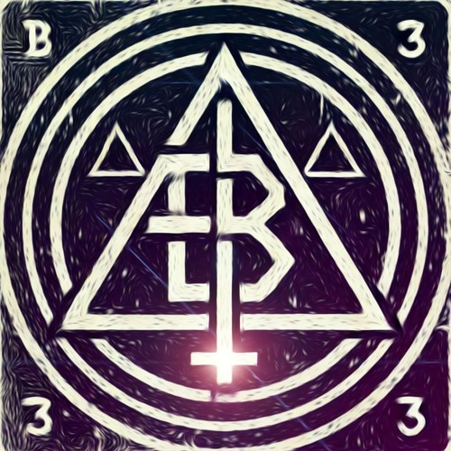

BoodmanDioufAccès sécurisé par jetons cryptographiques.
Création d'interfaces modulaires, boutons customisés et gestion des configurations utilisateurs avant export JSON.
Front-EndIdée : Développer un webhook ou une mini-app pour pousser proprement des templates de listes.
Idée / R&DSuivi et tracking de vos sessions multi-mondes pour l'expérience Archipelago standard.
Tracker Lancer l'applicationVersion optimisée et personnalisée pour l'intégration avec les streams Twitch (st3mon édition).
Stream Edition Lancer l'applicationVariante spécifique du tracker configurée pour les règles et restrictions de type "One Choice".
Special Rules Lancer l'applicationTechnicien d'exploitation informatique & Développeur Web
Technicien d'exploitation informatique avec une expérience dans la supervision, l'exploitation, le développement et la gestion de projets. Passionné par l'administration de systèmes, le développement web et l'amélioration continue des services.
l.picard974@laposte.net
07 50 88 67 35
85440 Avrillé
Permis B + Véhicule
Reprise du service applicatif et gestion de projets (Jeunesse, Police Municipale, refonte de la partie GLPI, amélioration des outils internes, mise en place des API sur une GRU, gestion de projets logiciels métiers). Gestion de la messagerie Zimbra, suite O365, suite Adobe, WinSCP, Keepass, Webex. Gestion du budget annuel, support aux agents (tickets, hotline) et formations sur les outils internes.
Suivi d'un plan de production, supervision des infrastructures et du patrimoine applicatif. Résolution ou escalade des incidents, gestion des sauvegardes et des données. Étude de l'existant, mise à jour des documentations/référentiels et transitions vers d'autres clients.
Stage au sein d'une start-up spécialisée dans la communication et le E-Commerce dans le cadre de l'obtention du diplôme.
Développement, DATA, Systèmes et Réseaux.
Une question, un projet ou besoin d'une collaboration ? Laisse un message.